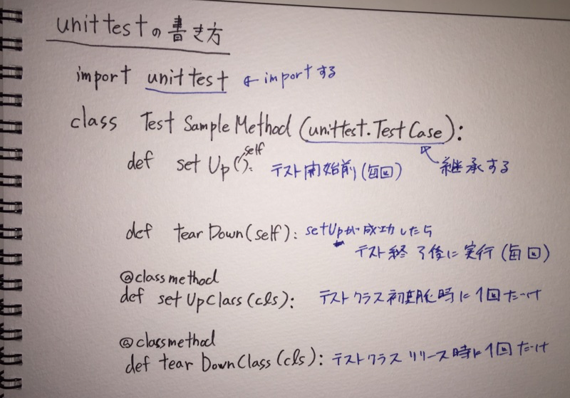

鉄は熱いうちに打て
=============================
unittestのテスト前後に実行される処理の確認¶
2017-12-12
今日の内容は、 Pythonでテストしたい にまとめている内容の詳細部分です。
この本の236ページに書いてある「テスト実行する前後の処理を定義する」表のメソッドを試してみます。

こんな感じで書きました。
<script src="https://gist.github.com/okusama27/4c9fa7d203a50b3278f210ca7d1dcbb3.js"></script>
実行してみます。
実行結果¶
setUpClass 、 tearDownClass は1回ずつ、 setUp 、 tearDown は2回ずつ呼ばれていますね。
setUpClass
setUp
test_method_1
method_1
tearDown
setUp
test_method_2
method_2
tearDown
tearDownClass
setUpClass msg
失敗させる¶
テストが失敗するようにちょっと書き換えてみます。
def test_method_2(self):
print('test_method_2')
expected = 'method_3'
actual = self.sample.method_2()
self.assertEqual(expected, actual)
実行結果¶
失敗しても、 tearDown 、 tearDownClass も呼ばれていますね。
ssetUpClass
setUp
test_method_1
method_1
tearDown
setUp
test_method_2
method_2
tearDown
Failure
Expected :'method_3'
Actual :'method_2'
<Click to see difference>
Traceback (most recent call last):
File "/Users/kaz/tmp/python_sample/tests/unittest_sample2.py", line 43, in test_method_2
self.assertEqual(expected, actual)
AssertionError: 'method_3' != 'method_2'
- method_3
? ^
+ method_2
? ^
tearDownClass
setUpClass msg
こんな感じですね。
